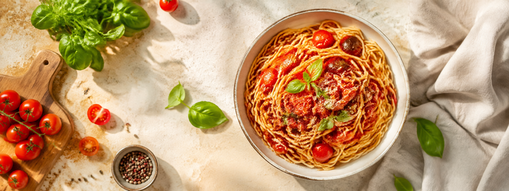

MealMap
Food planningGood dinners, less last-minute fuss
Let’s get something good on the table.
Jot down dinners you look forward to cooking. Add a cost for each and see how the week fits your budget.

Good dinners, less last-minute fuss
Jot down dinners you look forward to cooking. Add a cost for each and see how the week fits your budget.
